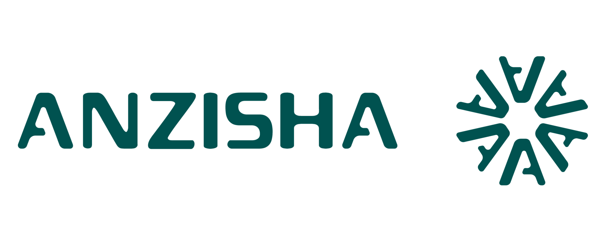
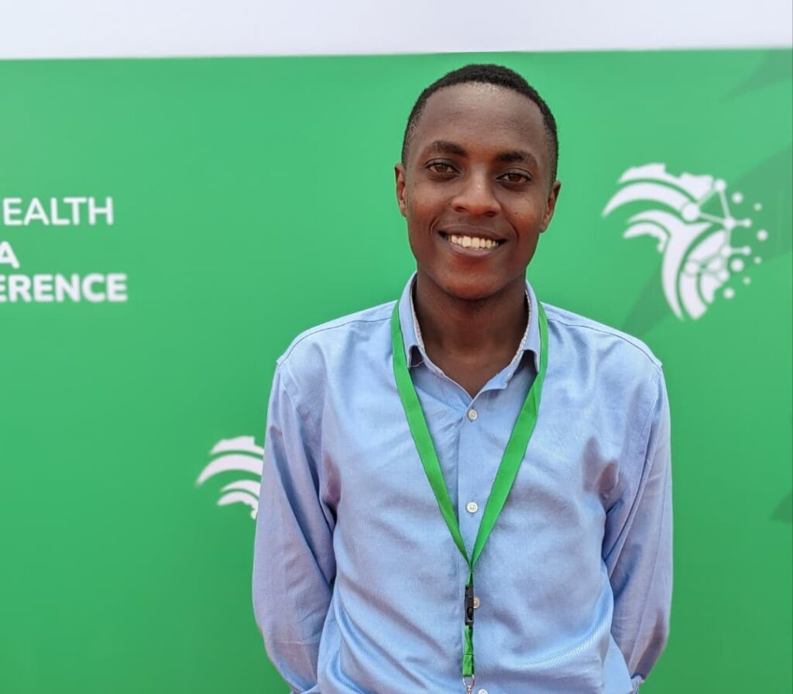
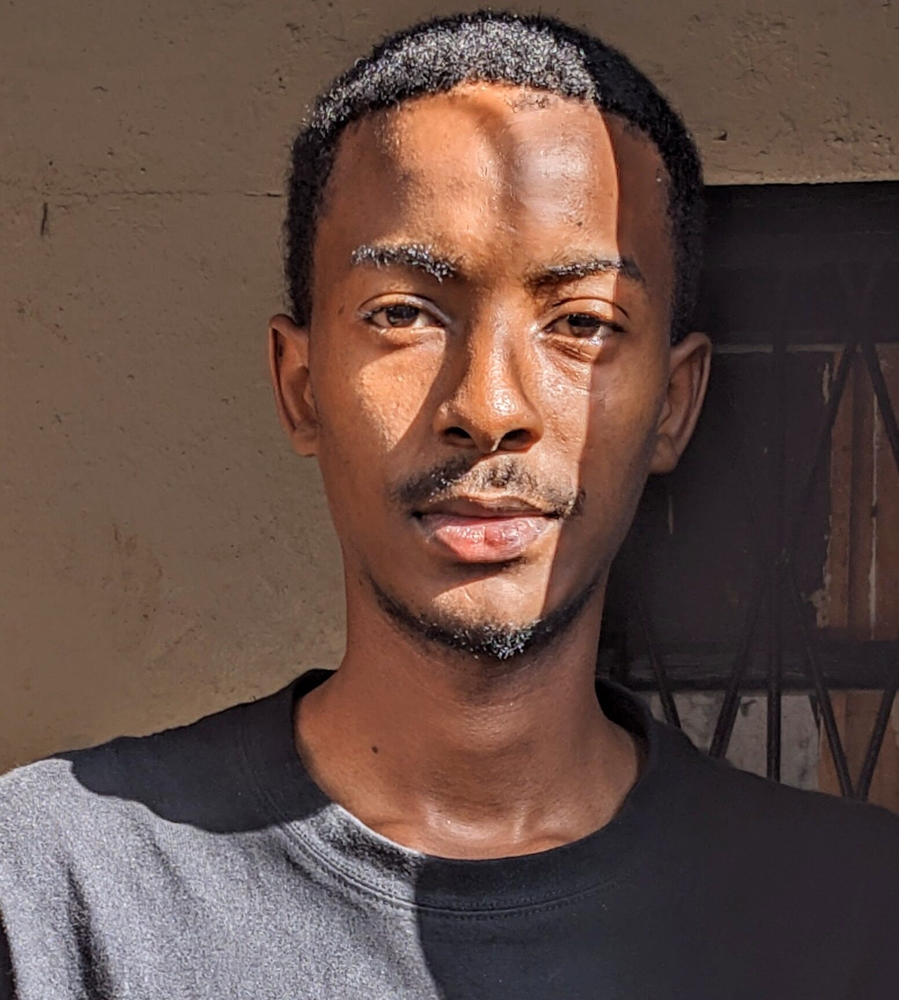
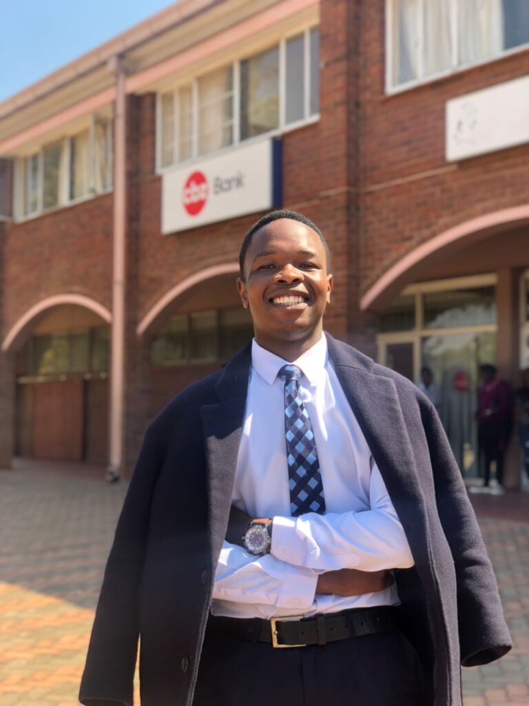

Meet the fellows
Sort by Default sorting ⌄
Countries
Select Countries ⌄
Sectors
Select Sectors ⌄
Year of selection
2011
2012
2013
2014
2015
2016
2017
2018
2019
2020
2021
2022
2023
2024
2025
2026
Age
15 · 16 · 17 · 18 · 19 · 20 · 21 · 22 ⌄
Show (332)

Namibia
2026
Jason Sheepo
Change Drivers Organization
Jason Sheepo is a visionary leader and the founder of Change Drivers Organization, a social enterprise dedicated to driving community transformation and sustainable development. Through innovative initiatives, Jason focuses on empowering local youth and fostering entrepreneurial skills to create lasting impact.
VISIT PROFILE →

Senegal
2026
Laba Faye
Pont Vert
Laba Faye built Pont Vert around a straightforward conviction: farmers deserve fair prices, reliable markets, and real support — not exposure to the whims of middlemen and weather cycles. As Founder, he leads strategy, marketing, and operations for a social enterprise quietly reshaping how agriculture works in Senegal.
VISIT PROFILE →
Democratic Republic of Congo
2026
Espérance Kavaketi
Es'Concept
Espérance Kavaketi grew up in Goma — a city shaped by both extraordinary resilience and extraordinary difficulty. She watched young women in her community face unemployment, limited economic opportunity, and few avenues for creative expression. Her response was to pick up leather, fabric, and locally sourced materials, and start creating. At 19, Espérance is the…
VISIT PROFILE →

Uganda
2026
Byamugisha Nickson
TAMU Flavoured Honey
Byamugisha represents a generation of African founders who see entrepreneurship not just as a path to income, but as a tool for social change. Driven by curiosity, discipline, and a commitment to impact, he founded TAMU Flavoured Honey to promote healthier lifestyles whilst building livelihoods in his community.
VISIT PROFILE →

Nigeria
2026
Chinonso Osueke
Dekona Homes and Apartments
Chinonso Goodluck Osueke didn’t have to look far to find her business idea. She watched students, corps members, and young professionals in Rivers and Bayelsa States struggle to find safe, affordable housing — forced into exploitative rental agreements, dangerous living conditions, and demands for one to two years’ rent upfront.
VISIT PROFILE →

Democratic Republic of Congo
2026
Eddy Kayisire
V-ZONE CLOUD
Eddy Kayisire grew up in the DRC where digital infrastructure was limited and technology was often seen as inaccessible. Rather than accepting that reality, he set out to change it. His passion for software development and cybersecurity led him to co-create homegrown digital solutions tailored specifically to African needs.
VISIT PROFILE →

Cote d'Ivoire
2026
Bio Euphrahim Yai
VertIvoire Groupe
Bio Euphrahim Yai grew up understanding that farming is about more than food — it is about community, environment, and long-term survival. From an early age, he developed a deep connection to agriculture and its role in Ivorian society. That connection became the foundation for a venture combining economic opportunity with environmental responsibility.
VISIT PROFILE →

Nigeria
2026
Covenant Awoyemi
Eco-Recycle Livestock Haven
Covenant Awoyemi is a Nigerian entrepreneur and community health nurse who turned a simple principle — nothing goes to waste — into a business model. Operating at the intersection of agriculture, waste management, and renewable energy, she is building sustainable solutions for rural communities in Nigeria.
VISIT PROFILE →

Zimbabwe
2026
Anele Marvellous Khumalo
Crisp & Co. Creatives
Anele Marvellous Khumalo grew up in Emganwini, Bulawayo, where entrepreneurship wasn’t a career choice — it was a means of survival. From a young age he was trading, and what began as a small printing and design hustle gradually became something more intentional: a structured agency built on the conviction that good branding shouldn’t be a luxury.
VISIT PROFILE →

Egypt
2026
Ahmed Abdelnasser Ahmed
Agreology
Ahmed Abdelnasser Ahmed grew up fascinated by the gap between what agriculture could be and what it was — inefficient, data-poor, and disconnected from modern technology. That gap became his mission. Ahmed is the Founder and CEO of Agreology, an Egyptian agri-tech startup built on the belief that smart, affordable technology can transform how farmers grow food.
VISIT PROFILE →

Kenya
2026
Branice Kazira
Signvrse
Growing up, Branice Kazira witnessed first-hand how communication barriers excluded Deaf and hard-of-hearing individuals from education, healthcare, and everyday life. That experience became her driving purpose: to use technology as a bridge for inclusion. Branice is Co-Founder and CTO of Signvrse, an AI-powered assistive technology company transforming accessibility for Deaf communities across Africa.
VISIT PROFILE →